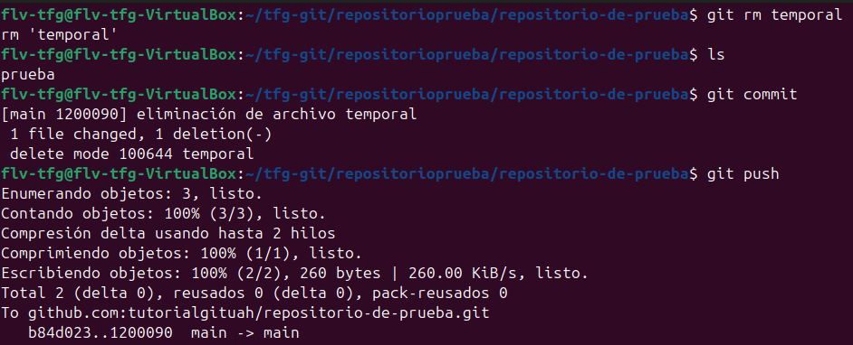
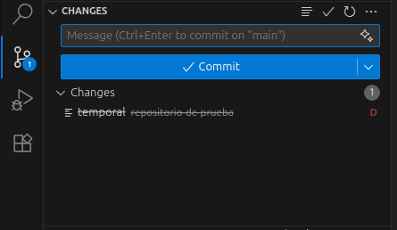

git rmSe utiliza para eliminar archivos del repositorio Git. A diferencia de simplemente borrar un archivo, git rm elimina el archivo tanto del directorio de trabajo como del staging area (área de preparación), registrando la eliminación en Git.

Dentro de la carpeta ejecutamos lo siguiente:
git rm (nombre del archivo)
Esto elimina el archivo del directorio de trabajo y del staging area. El cambio queda preparado para ser commiteado. Después debes hacergit commit para confirmar la eliminación en el historial de Git.
Para eliminar un archivo específico:
git rm (nombre del archivo)
Para eliminar un directorio completo y todos sus archivos:
git rm -r (nombre del directorio)
Para eliminar un archivo solo del staging area (sin borrar el archivo del directorio):
git rm --cached (nombre del archivo)
Esto es útil si accidentalmente agregaste un archivo que no querías trackear.Para eliminar múltiples archivos:
git rm (archivo1) (archivo2) (archivo3)
Para eliminar archivos que coincidan con un patrón:
git rm *.log
Esto eliminaría todos los archivos con extensión .log
En VSCode, para eliminar un archivo que está siendo trackeado por Git, simplemente eliminalo del explorador de archivos. Git detectará la eliminación y lo mostrará como cambio en el panel de control de Git. Haz click en el ícono "+" junto al archivo eliminado para agregarla al staging area, o directamente haz commit para confirmar la eliminación. También puedes hacer click derecho en un archivo en el explorador y seleccionar eliminar.